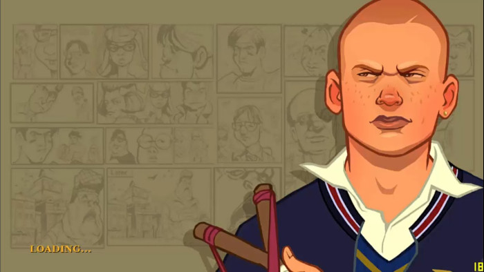
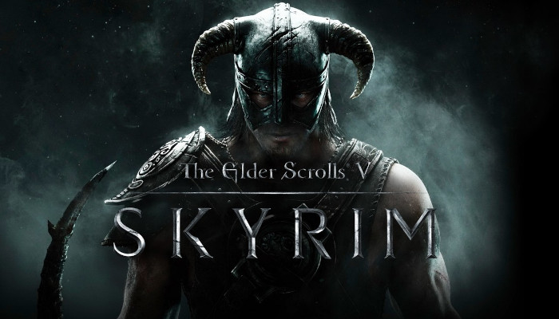
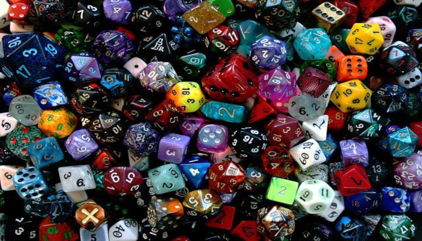

Arrisco dizer que foi o jogo que mais zerei, uma das trilhas sonoras mais originais e icônicas que já vi, fora a diversão de sair por ae tocando o terror, O famoso gta da escola, nostalgico demais.
Esse jogo foi o que eu mais passei horas imerso em sua jogatina, enfrentar dragões, gigantes, mamutes, fantasmas e o mais perigoso de todos os monstros "as galinhas" hahaha. Esse jogo tinha vida prória, ele respira enquanto você joga. Ambientação e Trilha Sonora impecaveis, não é atoa que mesmo sendo de 2011 ainda é um dos jogos mais jogados atualmente.
O melhor jogo para se jogar com os amigos em que você irá se entregar de corpo e alma, literalmente, onde a única limitção gráfica é a sua imaginação. Quer ser um Ogro que chora ao ver uma flor? Um Ladino que odeia roubar? Ou um assassino pacifista? Aqui você pode ser isso e muito mais, sua criatividade é o seu controle nesse mundo de cheio de aventuras.
